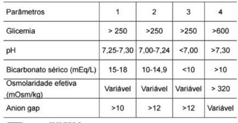

Questão 1 · Tratamento nas crianças e adolescentes · 4000128451Durante plantão na emergência, um médico está tratando um escolar de oito anos, em cetoacidose diabética, com infusão contínua de insulina regular. Os exames laboratoriais de admissão indicaram: glicose sérica = 510mg/dL, gasometria venosa com pH = 7,25 e cetonúria de 4+. Após quatro horas de infusão de soro siológico e insulina, a glicose caiu para 215mg/dL e o pH estabilizou em 7,32, embora as cetonas permanecessem elevadas. A conduta, nesse momento, deve ser:
A Manter infusão de insulina regular IV + soro fisiológico IV.
B Trocar a insulina regular IV para insulina de ação prolongada IM + soro fisiológico IV.
C Manter infusão de insulina regular IV e associar glicose a 5% ao soro fisiológico IV.
D Trocar a insulina regular IV para insulina NPH IM + solução de glicose a 5%.
E Nenhuma das anteriores.
Questão 2 · Tratamento no paciente adulto · 4000124090Paciente, 18 anos, é trazida ao Serviço de Emergência do HUAP/UFF com náuseas e vômitos, dor abdominal difusa de moderada intensidade e taquipneia. Relata ainda, no último mês, poliúria e polidipsia. Ao exame físico, hipohidratada (2+/4+), com hálito cetônico, respiração de Kussmaul, PA = 88x56mmHg, FC = 115bpm, dor abdominal difusa sem sinais de irritação peritoneal. Sobre o tratamento dessa paciente é correto afirmar que:
A é desnecessária a reposição de potássio caso este esteja normal.
B deve ser feita a reposição de bicarbonato caso o pH seja menor que 7,3.
C deve ser iniciada insulina venosa imediatamente.
D deve ser iniciada hidratação venosa com solução salina a 0,9%.
E deve ser interrompida a infusão de insulina tão logo haja normalização da glicemia.
Questão 3 · Fatores precipitantes · Tratamento · Fisiopatogenia · 4000120329A cetoacidose diabética (CAD) é um conjunto de alterações clínico-laboratoriais decorrentes da insu ciente ação insulínica e do aumento da produção de hormônios contrarreguladores da insulina, em resposta a alguma situação de estresse. Sobre este assunto, é correto afirmar:
A A reposição de insulina pode ser iniciada juntamente à fase de expansão ou na segunda hora do tratamento, após a expansão inicial.
B Recomenda-se a administração de insulina regular por via subcutânea.
C As principais causas de CAD são infecções (virais ou bacterianas) e falta de adesão ao tratamento, ocorrendo com mais frequência em indivíduos com diabetes mellitus tipo 2.
D A reposição de bicarbonato deve ser feita quando o pH for menor ou igual a 7,3.
E O valor da glicemia, como critério diagnóstico de cetoacidose diabética, deve ser maior que 600 mg/dl.
Revisar: possível letra faltando em enunciado
Questão 4 · Fatores precipitantes · Tratamento nas crianças e adolescentes · Diagnóstico · 4000120150Um paciente de dezesseis anos de idade foi levado ao pronto-socorro, por seu treinador de basquete, com quadro de queda do estado geral, dor abdominal e náuseas, iniciadas há um dia. O treinador contou que estão na cidade, instalados em um hotel próximo, por causa dos jogos escolares da temporada e que notou que, há três dias, o jovem vinha apresentando aumento da ingesta hídrica e “várias idas ao banheiro para urinar”, algumas delas durante a última partida de basquete, dois dias antes. Disse também que os pais do garoto moram em uma cidade vizinha e os encontrarão no hospital, mas já adiantaram que o paciente não faz nenhum tratamento médico, que suas vacinas estão atualizadas e que ele sempre foi um garoto saudável. Ao exame físico, o jovem encontrava-se sonolento, desidratado (+++/4) , com frequência cardíaca de 110 bpm, frequência respiratória de 22 ipm, pressão arterial de 95 x 50 mmHg e dextro 324 mg/dL. Urina 1 mostrou presença de glicosúria e cetonúria 3+. O laboratório mostrou os seguintes resultados: pH 7,22; bicarbonato 14 mEq/L; sódio sérico 135 mmol/L; e potássio sérico 4,5 mmol/L. Com base nesse caso hipotético, assinale a alternativa que apresenta, respectivamente, o diagnóstico mais provável e o tratamento inicial na sala de emergência.
A cetoacidose diabética e hidratação oral e insulina NPH subcutânea
B estado hiperglicêmico hiperosmolar e hidratação venosa com solução salina e insulina regular EV em bomba de infusão contínua
C cetoacidose diabética e hidratação venosa com solução salina e insulina regular EV em bomba de infusão contínua
D estado hiperglicêmico hiperosmolar e hidratação venosa com solução salina e insulina NPH subcutânea
E cetoacidose diabética e hidratação venosa com solução salina e insulina NPH subcutânea
Questão 5 · Cetoacidose · 4000120048Mulher de 20 anos está em tratamento para cetoacidose diabética desencadeada por infecção urinária. Recebe insulina endovenosa, hidratação e reposição de potássio. Está consciente, orientada e hemodinamicamente estável. A gasometria e os exames laboratoriais mostram: pH 7,32, bicarbonato 14 mEq/L, cloro 115 mEq/L, sódio 139 mEq/L, glicemia 150 mg/dL, albumina: 4,0 g/dL. Os exames laboratoriais sugerem que a paciente
A recebeu excesso de hidratação com cloreto de sódio.
B permanece em cetoacidose diabética.
C ainda está desidratada.
D está em sepse de foco urinário.
Questão 6 · Hipoglicemia · 4000120030Em um atendimento ambulatorial de rotina, um paciente adulto, jovem, aguardando atendimento na sala de espera, evoluiu com palidez, diaforese e torpor. Refere ser diabético insulinodependente e relata que saiu atrasado de casa e, por isso, não se alimentou pela manhã, tendo aplicado normalmente suas doses habituais de insulina NPH humana na noite anterior e nesta manhã. Foi realizada a dosagem de glicemia capilar, com resultado de 50 mg/dL. O paciente foi, então, encaminhado para o atendimento urgente, administrando-se solução de glicose 50% endovenosa e revertendo-se o quadro hipoglicêmico, com normalização dos níveis glicêmicos e melhora do estado geral. Com base nesse caso hipotético, assinale a alternativa correta.
A Devem ser investigadas no paciente outras causas de hipoglicemia, pois medicamentos hipoglicemiantes são as causas menos comuns em adultos.
B No jovem, a hipoglicemia autoimune é a causa mais comum de hipoglicemia.
C Deve ser realizado um exame de imagem para se excluir insulinoma, causa comum em indivíduos sabidamente diabéticos e já medicados.
D Deve ser suspensa a insulinoterapia e iniciado um hipoglicemiante oral.
E O paciente apresentou a tríade de Whipple: sinais e sintomas de hipoglicemia; níveis glicêmicos baixos (< 55 mg/dL); e resolução do quadro quando a normoglicemia foi estabelecida.
Questão 7 · Tratamento nas crianças e adolescentes · 4000111993Menina, 6 anos de idade, com antecedente de Diabetes Mellitus tipo 1, em uso regular de insulina NPH, foi admitida no serviço de emergência há 2 horas, devido a quadro de vômitos e dor abdominal há 3 dias. Os exames coletados e as medidas realizadas na sala de emergência estão descritos na tabela abaixo. Ao exame, paciente encontra-se em regular estado geral, mucosas secas, FC: 115bpm, frequência respiratória de 35 ipm, PA 90/50 mmHg, tempo de enchimento capilar de 4 segundos. Queixa-se apenas de fraqueza. Dentre as medidas a serem realizadas na terceira hora, inclui-se:

A Suspender insulinoterapia.
B Introduzir dieta pobre em potássio.
C Adicionar glicose à fluidoterapia.
D Adicionar bicarbonato à fluidoterapia.
Questão 8 · Tratamento · 4000110688Em relação ao tratamento da cetoacidose diabética, é correto afirmar:
A o uso de bicarbonato deve ser reservado para pH < 7,20.
B para correção da desidratação, deve ser realizada solução de NaCℓ a 0,45%.
C em casos leves a moderados, o tratamento pode ser realizado com insulina intramuscular.
D a hiperpotassemia é complicação frequente do tratamento.
E o uso de soro glicosado a 5% deve ser reservado para casos de hipoglicemia.
Questão 9 · Avaliação laboratorial e critérios diagnósticos · Diagnóstico · 4000107839Dois pacientes (pacientes A e B) deram entrada no pronto-socorro com descompensação diabética grave. Paciente A: mulher, 15 anos, quadro de poliúria e polidipsia, dor abdominal, hálito cetônico e glicemia sérica 625 mg/dL. Paciente B: mulher, 75 anos, portadora de diabetes mellitus tipo 2 desde os 50 anos de idade, com quadro de pólis, glicemia sérica de 1.200 mg/dL. Considerando-se as informações, assinale a alternativa CORRETA.
A Parâmetro: Ânion gap (mEq/L); Paciente A: < 12; Paciente B: >12
B Parâmetro: Osmolaridade (mOsm/L); Paciente A: >320; Paciente B: <320
C Parâmetro: Potássio (mEq/L); Paciente A: 3,1; Paciente B: 6
D Parâmetro: pH; Paciente A: >7,3; Paciente B: <7,3
E Parâmetro: Déficit de água (mL/kg); Paciente A: 200; Paciente B: 100
Questão 10 · Tratamento no paciente adulto · 4000086095Mulher, 19 anos, procura a emergência por poliúria, polidipsia, náuseas, vômitos e dor abdominal. Está em tratamento irregular para diabete melito tipo 1. Apresenta-se desidratada, com hálito cetônico e com respiração de Kussmaul. Exames iniciais: glicemia capilar 420 mg/dL, pH arterial 7.25, bicarbonato de 8 mEq/L, cetonúria positiva mas com débito urinário normal. Em relação ao manejo inicial dessa paciente, assinale a alternativa correta.
A É necessária a reposição de bicarbonato neste momento.
B A reposição de fluidos deve ser feita com solução de NaCl 0,45%.
C É importante medir o potássio antes de iniciar a infusão IV de insulina pelo risco de arritmias.
D Quando a glicemia plasmática estiver abaixo de 250 mg/dL e a cetonemia for negativa, pode-se descontinuar a infusão de insulina IV.
Questão 11 · Fisiopatogenia · Outras alterações laboratoriais · 4000039416Paciente 16 anos com quadro agudo de náuseas, vômitos, fraqueza e dor abdominal. Chega ao PA desidratado e hálito cetônico. HGT 542, gasometria ph 7.0, HCO3 12. A respeito da condição que afeta o adolescente, faz parte de sua fisiopatologia
A o aumento da osmolaridade urinária
B a redução glucagon
C a redução gliconeogenese
D a redução de GH
Questão 12 · Apresentação clínica · Investigação diagnóstica admissional · 4000007059Menina de 5 anos comparece ao pronto-socorro com queixa de náusea, vômitos e dor abdominal há 1 dia, com piora agora após ingerir doce em uma festa infantil. Nega diarreia. Refere urina em grande quantidade, e voltou a ter enurese noturna há 1 semana. Nega alteração da cor ou odor da urina. Ao exame: criança desidratada de 2° grau, hipoativa, porém pedindo para beber água, taquicárdica, porém sem alterações na ausculta cardíaca, taquipneica, porém sem alterações na ausculta pulmonar, abdome doloroso a palpação profunda difusamente, sem outras alterações. Qual sua principal hipótese diagnóstica e conduta nesse caso?
A Diabetes Mellitus, solicitar para colher glicemia amanhã após jejum de 8 horas.
B Gastroenterocolite Aguda (GECA, soro de rehidratação via oral).
C Diabetes Mellitus, realizar glicemia agora.
D Gastroenterocolite Aguda (GECA, soro de rehidratação endovenoso).
Questão 13 · Tratamento nas crianças e adolescentes · 4000125640Fernanda, oito anos, é trazida à emergência, após ser encontrada desacordada em casa. A família informa que a criança tem DM tipo 01. Ao exame físico: EGMau, sonolenta, desidratada, taquipneica, hálito frutado. AR: MV+ diminuído em base esquerda com crepitantes nos, FR: 28 ipm, Sat.O2: 92% (ar ambiente). ACV: RCR 2T BNF, sem sopros, FC: 130 bpm, TPC: 4 segundos, PA: 85:55 mmHg. Os exames laboratoriais de admissão mostraram: Glicemia = 600 mg/dL, pH = 7,25, Cetonas = 4+ na urina. Após quatro horas de infusão de soro siológico e insulina, a glicose caiu para 235mg/dL e o pH estabilizou em 7,32, com corpos cetônicos ainda presentes na urina. A conduta, nesse momento, deve ser:
A Trocar a insulina IV para insulina de ação prolongada IM + solução de glicose a 5%.
B Manter infusão de insulina IV e associar glicose a 5% ao soro fisiológico IV.
C Trocar a insulina IV para insulina de ação prolongada IM + soro fisiológico IV.
D Manter infusão de insulina IV + soro fisiológico IV.
E Nenhuma das anteriores está correta.
Questão 14 · Tratamento no paciente adulto · 4000120460Homem de 50 anos, com cetoacidose diabética, está recebendo solução salina a 0,45% e insulina regular endovenosa na dose de 0,1 U/kg/h. Exames laboratoriais atuais: sódio 140 mmol/L, potássio 4,0 mmol/L, glicose 180 mg/dL, pH 7,28 e bicarbonato 10 mmol/L. As próximas medidas são:
A manter insulina 0,1 U/kg/h e iniciar suplementação de potássio.
B manter insulina 0,1 U/kg/h e iniciar suplementação de soro glicosado.
C reduzir insulina para 0,05 U/kg/h e iniciar suplementação de soro glicosado e de potássio.
D reduzir insulina para 0,05 U/kg/h, trocar solução salina a 0,45% para soro fisiológico e iniciar suplementação de potássio.
Questão 15 · Tratamento no paciente adulto · 4000111905Paciente de 18 anos deu entrada no PS com dor abdominal e vômitos. Ao exame físico apresenta-se com respiração acidótica, FR= 27 mov/min, FC= 120 bat/min. Os exames iniciais mostraram glicemia: 370mg/dl, glicosúria ++++ e cetonúria ++++. Após ser medicada com hidratação e insulina regular, novos exames foram realizados: glicemia: 170mg/dl, glicosúria ausente e cetonúria ++++. A conduta mais adequada neste momento é:
A Solução de Na Cl 0,9% + insulina regular EV
B Solução de glicose a 5% + insulina regular EV
C Solução NaCl 0,9% + solução de glicose a 5% + insulina regular EV
D Solução de NaCl 0,9% + insulina regular SC
Questão 16 · Tratamento · Outras alterações laboratoriais · 4000111626Com relação à cetoacidose diabética, podemos afirmar que:
A Está comprovado que os análogos da insulina, de ação ultra-rápida, são melhores que a insulina regular, levando a uma compensação mais rápida.
B O tratamento com bicarbonato de sódio não deve ser protelado se o paciente estiver com um pH de sangue arterial menor que 7,20.
C O sódio total corporal costuma estar elevado.
D O potássio sérico costuma diminuir, após a compensação da acidose.
Questão 17 · Tratamento nas crianças e adolescentes · 4000101027Paciente de 15 anos, gênero feminino, admitida no departamento de emergência por quadro de confusão mental, dor abdominal intensa de localização difusa associado à dispnéia. Segundo a família, a paciente já apresentava há 2 meses queixas de poliúria, polidipsia e perda de 8 kg no período. Ao exame físico percebia-se desidratada +++/4+, FC = 120bpm, FR = 30ipm, PA = 110x70, abdome doloroso difusamente sem visceromegalias ou descompressão brusca dolorosa. Exames laboratoriais: hemograma (Ht = 44%, leucócitos totais = 18.000 com 76% de segmentados, plaquetas = 220 mil), glicemia = 380mg/dl, Na = 144mmol/L, K = 3,8mmol/L, creatinina = 1,4mg/dl, bilirrubina total = 1,0mg/dl e gasometria arterial pH = 7,15, pO₂ = 80mmHg, pCO₂ = 17mmHg, HCO₃ = 6mEq/L, sat O₂ = 94%. Com relação à conduta deste caso assinale a alternativa correta
A Após expansão salina inicial na primeira hora a hidratação deste paciente deve ser realizada com solução salina a 0,45%.
B Não será possível a introdução da insulinoterapia sem antes repor potássio.
C A insulinoterapia deve ser prontamente prescrita, em bomba de infusão contínua, sem necessidade de reposição de potássio.
D O provável fator de descompensação é de natureza infecciosa, estando indicada a introdução de antibioticoterapia na primeira hora.
Questão 18 · Complicações da cetoacidose diabética · 4000095231São fatores de risco associados a edema cerebral em pacientes com cetoacidose diabética todos os abaixo, EXCETO:
A Cetoacidose grave (pH < 7,1).
B Glicemia superior a 800mg/dL no momento do diagnóstico.
C Necessidade de correção volêmica superior a 50ml/Kg nas primeiras 4 horas.
D Baixa idade.
Questão 19 · Outras alterações laboratoriais · 4000077917Jovem de 18 anos, masculino, se apresenta com cetoacidose diabética, pH 7,2 e 400 mg/dL de glicemia. Em relação a aferição do potássio:
A Níveis séricos devem estar aumentados por conta da acidose.
B É provável que os níveis de potássio estejam acima de 5 mEq/L.
C É provável que os níveis de potássio estejam abaixo de 3 mEq/L.
D É provável haver déficit de potássio total apesar dos níveis séricos.
E Os níveis séricos retratam a realidade corporal.
Questão 20 · Tratamento no paciente adulto · 4000069322Paciente 57 anos, com diagnóstico prévio de hipertensão e hipotireoidismo em tratamento regular. Foi diagnosticado com diabetes há cerca de 2 anos, para a qual foi prescrita medicação que interrompeu por conta própria após 6 meses de tratamento. Internado há 1 semana com critérios para cetoacidose diabética. Feito tratamento em CTI com alta para enfermaria após melhora clínica e laboratorial, já fora da bomba de infusão venosa de insulina, apenas para ajuste da medicação via subcutânea. Pergunta-se: Na enfermaria, o paciente apresentava-se clinicamente bem, com glicemias discretamente elevadas em uso de insulina NPH Basal + bôlus via subcutânea. Exames laboratoriais sem alterações, exceto por exame de urina (EAS) coletado no dia com cetonúria (3+). Qual o significado dessa alteração e conduta a tomar?
A Paciente encontra-se ainda em cetoacidose e deve ser reiniciada hidratação venosa vigorosa e bomba de infusão com insulina regular venosa.
B Paciente possivelmente está em cetoacidose, deve-se coletar uma gasometria venosa para confirmação e reiniciar tratamento com insulina NPH venosa e hidratação em CTI.
C Paciente encontra- se em fase de melhora do quadro de cetoacidose apresentado, quando há redução da concentração sérica de betahidroxibutirato e aumento da sua conversão a acetoacetato, que é identificado na urina pelo método de cetonúria. Deve-se seguir o ajuste de insulina NPH via subcutânea visando a alta do paciente.
D Paciente encontra-se claramente em melhora do quadro de cetoacidose e possivelmente o exame está incorreto. Deve- se manter o tratamento com insulina regular por via intramuscular e solicitar novo exame de EAS.
Questão 21 · Paciente adulto · 4000069316Paciente 57 anos, com diagnóstico prévio de hipertensão e hipotireoidismo em tratamento regular. Foi diagnosticado com diabetes há cerca de 2 anos, para a qual foi prescrita medicação que interrompeu por conta própria após 6 meses de tratamento. Internado há 1 semana com critérios para cetoacidose diabética. Feito tratamento em CTI com alta para enfermaria após melhora clínica e laboratorial, já fora da bomba de infusão venosa de insulina, apenas para ajuste da medicação via subcutânea. Pergunta-se: Para diagnóstico do quadro inicial de cetoacidose diabética, os critérios observados foram:
A Glicemia > 600 mg/dL; Cetonemia, Bicarbonato sérico > 15 mmol/L.
B Glicemia > 250 mg/dL; Bicarbonato sérico < 15 mmol/L; pH sérico < 7,3.
C Glicemia > 250 mg/dL; Osmolaridade sérica efetiva > 320 mOsm/Kg; pH sérico > 7,3.
D Glicemia > 600 mg/dL ; Cetonemia; Osmolaridade sérica efetiva > 320 mOsm/Kg.
Questão 22 · Tratamento nas crianças e adolescentes · 4000050114CBS, sexo masculino, 11 anos de idade, internado por apresentar primo descompensação de diabetes melitus tipo 1, com quadro de cetoacidose diabética. No momento, em uso de venóclise de manutenção comSF0,9% e KCl, além de Insulina Regular 0,1U/kh/hora, em bomba de infusão contínua endovenosa. Ao ser reavaliado novamente pela plantonista de emergência, está sem vômitos, hidratado, consciente e orientado com dor abdominal difusa leve, apresenta glicemia capilar = 250mg/dL e gasometria venosa com pH= 7,15, Bic=8, K= 4,0. Qual seria a conduta ideal da plantonista nesse momento?
A Suspender o soro e a insulina e não dar bicarbonato.
B Manter o soro fisiológico, reduzir infusão de insulina para 0,05U/kg/hora, dar bicarbonato e reavaliar gasometria após 2 horas.
C Manter o soro fisiológico, manter dose de insulina de 0,1U/kg/hora até glicemia próxima de 100mg/dl, dar bicarbonato em bolus e reavaliar glicemia capilar após 1 hora.
D Introduzir glicose ao soro, manter dose de insulina de 0,1U/kg/hora, não dar bicarbonato e reavaliar glicemia capilar após 1 hora e gasometria após 2 horas.
E Introduzir glicose ao soro, reduzir dose de insulina para 0,05U/kg/hora, não dar bicarbonato e reavaliar glicemia capilar após 1 hora e gasometria após 2 horas.
Questão 23 · Complicações do estado hiperglicêmico hiperosmolar · 4000048303Um paciente diabético de 48 anos foi internado em coma hiperosmolar. Que alterações dos eletrólitos séricos são esperadas após o início da infusão endovenosa de insulina?
A Elevação dos níveis de potássio e magnésio
B Redução dos níveis séricos de sódio e potássio
C Redução dos níveis de sódio e cálcio
D Elevação dos níveis de sódio e potássio
E Elevação do nível de sódio e redução do nível de potássio
Questão 24 · Tratamento no paciente adulto · Apresentação clínica · Fisiopatogenia · 4000035376GLA, 27 anos, grávida, portadora de diabetes mellitus, evoluiu com descompensação e cetoacidose. Assinale a alternativa que representa a condução CORRETA do caso apresentado:
A O sódio, o potássio, o cloro e o bicarbonato são íons utilizados na fórmula de cálculo do anion gap.
B A infusão venosa de insulina pode ser suspensa assim que a hiperglicemia estiver controlada, por volta de 180 a 250 mg/dL (VR < 99 mg/dL).
C A acidose metabólica deve ser corrigida com infusões de bicarbonato de sódio até se atingir um pH > 7.30 (VR = 7.35 a 7.45)
D A ureia e a glicose são componentes osmoticamente mais importantes que o sódio sérico.
Questão 25 · Rastreio da doença renal do diabetes · Complicações crônicas · Complicações agudas · 4000012642João, 48 anos, vai à consulta, levando exames laboratoriais (glicemia de jejum 150 mg/dl) realizados, porque "sua mãe tem diabetes". Nega comorbidades, é sedentário, nega tabagismo, tem alimentação rica em carboidratos de alto índice glicêmico, diz não gostar muito de frutas e verduras. Ao exame, IMC de 27, circunferência abdominal 93 cm. João retorna à consulta na Unidade de Saúde da Família para acompanhamento do seu tratamento para diabetes. Hoje, com 52 anos, está em uso de 14 unidades de insulina NPH à noite, além de metformina 3 vezes ao dia. Algumas das complicações às quais este paciente com diabetes pode desenvolver estão descritas nas alternativas abaixo, assinale a CORRETA.
A O rastreamento da retinopatia e microalbuminúria devem ser realizados após 10 anos de diagnóstico de DM.
B A avaliação da sensibilidade tátil dos pés é realizada com monofilamento de 50 g em um ponto de cada pé.
C As complicações agudas, que podem ocorrer com João, são: hipoglicemia, cetoacidose e retinopatia.
D Uma orientação aconselhada na consulta com João deve ser o reconhecimento dos sintomas de hipoglicemia.
E Caso João chegasse à unidade com tontura, sudorese e tremor, dever-se-ia suspeitar de hiperglicemia.
Questão 26 · Crianças e adolescentes · 4000010838Na pediatria, o diagnóstico de cetoacidose diabética é feito com base nos seguintes critérios laboratoriais:
A Hiperglicemia (glicemia > 200 mg/dl; acidose metabólica (pH venoso < 7,3 e (ou) bicarbonato < 15 mEq/L); e presença de cetonemia (> 3 mg/dl).
B Hiperglicemia (glicemia > 200 mg/dl; acidose metabólica (pH arterial > 7,3 e bicarbonato > 15 mEq/L); e presença de cetonemia (> 3 mg/dl).
C Hiperglicemia (glicemia > 200 mg/dl; acidose metabólica (pH venoso < 7,3 e (ou) bicarbonato > 15 mEq/L); e ausência de cetonemia.
D Hiperglicemia (glicemia > 600 mg/dl; acidose metabólica (pH arterial > 7,3 e bicarbonato > 15 mEq/L); e ausência de cetonemia.
E hiperglicemia (glicemia > 600 mg/dL); acidose metabólica (pH arterial < 7,3 e (ou) bicarbonato > 15 mEq/L); e presença de cetonemia (> 3 mg/dL).
Questão 27 · Tratamento · 4000002195Assinale a alternativa CORRETA em relação à reposição do bicarbonato no tratamento da cetoacidose diabética.
A Atualmente não há indicação para que seja realizada no tratamento da cetoacidose diabética, exceto durante a ressuscitação, com o intuito de se preservar a ação da insulina.
B É considerada um dos recursos que evitam a ocorrência de edema cerebral em crianças.
C Pode levar à hipóxia cerebral decorrente da diminuição da afinidade da hemoglobina pelo oxigênio.
D Também pode causar hiponatremia e hipocalemia.
Questão 28 · Outras alterações laboratoriais · 4000002175Quanto aos fatores relacionados à fisiopatologia da cetoacidose diabética (CAD), assinale a alternativa CORRETA.
A O aumento do fluxo de água livre do compartimento intracelular para o extracelular, decorrente da elevação da osmolaridade plasmática, leva à hipernatremia.
B O aumento do fluxo de água livre do compartimento intracelular para o extracelular, decorrente da elevação da osmolaridade plasmática, leva à hiponatremia dilucional.
C O equilíbrio entre os compartimentos intracelular e extracelular raramente leva à alteração nos níveis de sódio.
D A elevação de ácidos graxos livres no plasma contribui para o aumento da natremia.
Questão 29 · Tratamento nas crianças e adolescentes · 4000099650Paciente de 17 anos, gênero feminino, admitida no departamento de emergência por quadro de confusão mental, dor abdominal intensa de localização difusa associada à dispneia. Segundo a família, a paciente já apresentava há 2 meses queixas de poliúria, polidipsia e perda de 8 kg nos últimos 2 meses. Ao exame físico percebia-se desidratada +++/4+, FC=120bpm, FR=30ipm, PA=110x70, abdome doloroso difusamente sem visceromegalias ou descompressão brusca dolorosa. Exames laboratoriais: hemograma (Ht=44%, leucócitos totais=8.000 com 56% de segmentados, plaquetas=220 mil), glicemia=280mg/dl, Na=144mmol/L, K=3,2mmol/L, creatinina=1,4mg/dl, bilirrubina total=1,0mg/dl e gasometria arterial ph=7,15, pO2=80mmHg, pCO2=17mmHg, HCO3=6mEq/L, sat O2=94%. Após reposição de 2 litros de solução salina na primeira hora de admissão hospitalar, qual deve ser a próxima medida terapêutica para este caso?
A Introdução de insulina Regular em bomba de infusão contínua
B Reposição de potássio
C Reposição de bicarbonato de sódio
D Prescrever antibioticoterapia de amplo espectro
Questão 30 · Tratamento · 4000095782Sobre o tratamento da cetoacidose diabética, assinale a alternativa CORRETA.
A Quando a glicemia for superior a 500mg/dL, deve-se fazer uma dose de ataque de insulina regular (1UI/Kg) visandoa redução rápida da glicemia.
B Quando a glicemia atinge 200 a 250mg/dL, deve-se suspender a infusão de insulina regular (0,1UI/Kg/hora) e iniciar com insulina NPH (0,5UI/Kg/hora).
C Enquanto estiver recebendo a infusão de insulina regular (0,1UI/K g/hora), o paciente não pode receber alimentação por via oral.
D A interrupção da infusão de insulina regular está condicionada à estabilização da glicemia, normalização do ânion gap e cetonemia negativa.
Questão 31 · Tratamento · 4000076574M.J.S. de 65 anos, foi encontrado por vizinhos desacordado em casa, sendo levado ao Pronto Socorro pelo SAMU. Segundo informações, ele é diabético e usa insulina. Sua mulher e lhos estavam fora de casa há 7 dias, visitando parentes. Ao exame: hipocorado 1+/4+, desidratado 3+/4+, acianótico, e anictérico. Havia desvio da comissura labial para a direita e hemiparesia esquerda com reflexo cutâneo-plantar em extensão. Isocoria foto- reagente. PA: 170 x 100 mmHg. PR: 105 BPM. FR 24 IRPM. Tax: 37°C. RCI com SS 2+/6+ em FA e BEE. MV audível universalmente, sem RA. Abdômen: NDN. MMII: pulsos pediosos reduzidos bilateramente. Exames laboratoriais: Glicose: 900 mg/dl; creatina: 2,0 mg/dl; uréia: 120 mg/dl; sódio 156 mEq/L; potássio: 2,8 mEq/L; cloreto: 122 mEq/L; bicarbonato: 18 mEq/L. EAS: glicosúria 3+; cetonúria: negativa; proteínas 1+; piócitos 6/campo; hemácias 2/campo. Tomogra a Computadorizada do crânio: hipodensidade fronto- temporo-parietal D. Assinale a alternativa que contém o conjunto de diagnósticos CORRETOS para a paciente: Ainda em relação ao enunciado acima. Assinale a alternativa que contém o tratamento inicial de escolha para o quadro metabólico:
A Hidratação venosa com salina a 0,45% e reposição de potássio.
B Hidratação venosa com salina a 0,45% e insulina regular venosa de bolus.
C Hidratação venosa com salina a 0,45% e reposição de bicarbonato de sódio.
D Hidratação venosa com Soro fisiológico hipertonico e insulina regular venosa em bolus.
Questão 32 · Apresentação clínica · Fatores precipitantes · Acidente Vascular Cerebral Isquêmico · 4000076522M.J.S. de 65 anos, foi encontrado por vizinhos desacordado em casa, sendo levado ao Pronto Socorro pelo SAMU. Segundo informações, ele é diabético e usa insulina. Sua mulher e lhos estavam fora de casa há 7 dias, visitando parentes. Ao exame: hipocorado 1+/4+, desidratado 3+/4+, acianótico, e anictérico. Havia desvio da comissura labial para a direita e hemiparesia esquerda com reflexo cutâneo-plantar em extensão. Isocoria foto- reagente. PA: 170 x 100 mmHg. PR: 105 BPM. FR 24 IRPM. Tax: 37°C. RCI com SS 2+/6+ em FA e BEE. MV audível universalmente, sem RA. Abdômen: NDN. MMII: pulsos pediosos reduzidos bilateramente. Exames laboratoriais: Glicose: 900mg/dl; creatina: 2,0 mg/dl; uréia: 120mg/dl; sódio 156 mEq/L; potássio: 2,8 mEq/L; cloreto: 122 mEq/L; bicarbonato: 18 mEq/L. EAS: glicosúria 3+; cetonúria: negativa; proteínas 1+; piócitos 6/campo; hemácias 2/campo. Tomogra a Computadorizada do crânio: hipodensidade fronto- temporo-parietal D. Assinale a alternativa que contém o conjunto de diagnósticos CORRETOS para a paciente:
A Cetoacidose diabética e Acidente vascular encefálico hemorrágico.
B Cetoacidose diabética e Acidente vascular encefálico isquêmico.
C Estado hiperosmolar hiperglicêmico não cetótico e Acidente vascular encefálico hemorrágico.
D Estado hiperosmolar hiperglicêmico não cetótico e Acidente vascular encefálico isquêmico.
Questão 33 · Tratamento nas crianças e adolescentes · 4000065171Paciente de 17 anos, 50kg, é admitido na unidade de emergência do Hospital Alcides Carneiro com quadro de náuseas, vômitos, dor abdominal e alteração do nível de consciência. Sinais vitais: PA: 100 x 50 mmHg, FC: 120 bpm, FR: 28 irpm, Tax: 36oC. Exames laboratoriais: Sódio: 126 mEq/L (N: 135-145), Potássio: 4,3 mEq/L (N: 3,5-5,5), Cloro: 100 mEq/L (N: 98- 107), Glicemia: 380 mg/dL (N: 70-99), Hemoglobina: 15,3 g/dL (N: 12-16), Leucócitos: 17000 (0/2/0/0/2/85/10/3) (N: 4000-11000), Plaquetas: 267.000 (N: 150.000- 450.000), Uréia: 75 mg/dL (N: 13-43), Creatinina: 1,4 mg/dL (0,6-1,1), pH: 7,12 (N: 7,35- 7,45), HCO3: 10mEq/L (N: 22-26), pCO2: 24 mmHg (N: 35-45), reação do nitroprussiato na urina positiva (N: negativa). Considerando a principal hipótese diagnóstica, qual(is) a(s) assertiva(s) reflete(m) o tratamento adicional? I. Insulina Regular intravenosa 5 UI em bolus; II. Acréscimo de cloreto de potássio 30mEq por litro de soro fisiológico.; III. Insulina Regular intravenosa 5 UI/h
A Apenas III está correta.
B Apenas II está correta.
C Todas as assertivas estão corretas.
D Nenhuma das assertivas está correta.
Questão 34 · Cetoacidose diabética · Estado hiperglicêmico hiperosmolar · 4000043431As descompensações agudas mais importantes do Diabetes mellitus são a cedoacidose diabética (CAD) e o estado hiperosmolar (EHO). Sobre as características clínico-laboratoriais dessas duas condições, assinale a alternativa INCORRETA.
A A CAD tem instalação mais rápida (geralmente dentro de 24 horas), enquanto o EHO se desenvolve mais insidiosamente.
B O acometimento neurológico é mais pronunciado no EHO, podendo, inclusive, apresentar sinais focais e convulsões.
C A dor abdominal é comumente observada na CAD, sendo sua frequência proporcional ao grau de acidose metabólica.
D Os níveis glicêmicos são, em média, mais elevados no EHO, podendo atingir valores acima de 1000mg/dL.
E A presença de níveis elevados de amilase e lipase em um paciente com CAD define a pancreatite aguda como fator precipitante da descompensação.
Questão 35 · Tratamento nas crianças e adolescentes · 4000024009Uma criança de sete anos é admitida no pronto-socorro com queixa de sonolência. A mãe relata que a criança vem emagrecendo muito nas últimas semanas, apesar de alimentar-se muito bem. Relata também que, nos últimos três dias, passou a beber mais água e a urinar mais vezes, porém, nas últimas 24 horas, tem cado cada vez mais sonolenta e que, por achar que se tratava de hipoglicemia, deu um chocolate para a criança, mas ela vomitou após ingeri-lo. O exame físico é normal, exceto pela sonolência excessiva (Glasgow 14). Os exames solicitados apresentaram os seguintes resultados: Hemograma: Hb = 13 Ht = 40 16.750; leucócitos (2%bastões, 40% segmentados, 4% eosinó los, 2% basó los, 12% monócitos, 40% linfócitos), 234.000 plaquetas; Glicemia:1130 mg/dL; Ureia: 36 mg/dL; Creatinina: 0,5 mg/dL; Gasometria venosa: pH = 7,20; PCO₂ = 22 mmHg PO₂ = 40 mmHg; bicarbonato = 8 mmol/LBE = -15 satO₂ = 75%; Exame simples de urina (EAS): densidade urinária = 1002, pH = cetonúria ++++, nitrito negativo, ausência de proteína, hemácias ou leucócitos; Liquor: 3 leucócitos/mm³, O hermácias, protéina = 20 mg/dL, glicose = 610 mg/dL. O tratamento imediato é:
A manitol a 20 %, com infusão de 1 grama/kg de peso.
B desmopressina nasal.
C insulina intravenosa.
D expansão volêmica com 20 ml/hg de peso, com soro fisiológico a 0,9%.
Revisar: possível letra faltando em enunciado
Questão 36 · Apresentação clínica · Crianças e adolescentes · 4000023992Uma criança de sete anos é admitida no pronto-socorro com queixa de sonolência. A mãe relata que a criança vem emagrecendo muito nas últimas semanas, apesar de alimentar-se muito bem. Relata também que, nos últimos três dias, passou a beber mais água e a urinar mais vezes, porém, nas últimas 24 horas, tem cado cada vez mais sonolenta e que, por achar que se tratava de hipoglicemia, deu um chocolate para a criança, mas ela vomitou após ingeri-lo. O exame físico é normal, exceto pela sonolência excessiva (Glasgow 14). Os exames solicitados apresentaram os seguintes resultados: Hemograma: Hb = 13 Ht = 40 16.750; leucócitos (2%bastões, 40% segmentados, 4% eosinó los, 2% basó los, 12% monócitos, 40% linfócitos), 234.000 plaquetas; Glicemia:1130 mg/dL; Ureia: 36 mg/dL; Creatinina: 0,5 mg/dL; Gasometria venosa: pH = 7,20; PCO₂ = 22 mmHg PO₂ = 40 mmHg; bicarbonato = 8 mmol/LBE = -15 satO₂ = 75%; Exame simples de urina (EAS): densidade urinária = 1002, pH = cetonúria ++++, nitrito negativo, ausência de proteína, hemácias ou leucócitos; Liquor: 3 leucócitos/mm³, O hermácias, protéina = 20 mg/dL, glicose = 610 mg/dL. Diante desse exposto, a principal hipótese diagnóstica é:
A encefalite viral.
B diabetes insipidus.
C cetoacidose diabética.
D tumor de sistema nervoso central.
Revisar: possível letra faltando em enunciado
Questão 37 · Cetoacidose diabética · Fisiopatogenia · 4000014653Paciente feminina, 24 anos, moradora de rua, admitida com quadro relatado de náuseas, vômitos e dor abdominal há 3 dias, com piora progressiva e obnubilação mental nas últimas 24 horas. Sem uso de drogas ou álcool. Comorbidades e uso de medicações são desconhecidas. Ao exame físico: PA: 90 x 60 mmHg; FC: 120 bpm; FR: 32 irpm; sonolenta, desidratada 3+/4+, presença de hálito cetônico. Exames laboratoriais: hemograma com leucocitose sem desvio; urina com cetonúria 3+/4+ e glicosúria 4+/4+; glicemia: 500 mg/dl; Na: 135 mg/dl (VR: 135-145 mg/dl); K: 5,5 mEq/L; pH: 7,16 HCO₃: 12 mEq/L (VR: 22-26 mEq/L) pCO₂: 28 mmHg (VR: 35-45 mmHg); lactato: 2,5 mEq/L (VR: até 2 mEq/L); radiogra a de tórax normal; eletrocardiograma com taquicardia sinusal. LEGENDA: PA: pressão arterial; FC: frequência cardíaca; bpm: batimentos por minuto; FR: frequência respiratória; irpm: incursões respiratórias por minuto; Na: sódio; K: potássio; HCO₃: bicarbonato; VR: valor de referência. Considerando o diagnóstico mais provável e sua fisiopatologia, qual a afirmativa CORRETA?
A O quadro é de acidose metabólica com ânion gap elevado, causada primariamente pela perda de bicarbonato.
B Com o tratamento adequado, a hiperglicemia deve apresentar resolução posterior à correção da cetose.
C Níveis elevados de glucagon e catecolaminas, isoladamente, são capazes de produzir o quadro clínicolaboratorial.
D A cetose que ocorre se relaciona à lipólise, liberação de ácidos graxos livres e formação hepática de corpos cetônicos.
Questão 38 · Tratamento · 4000005405Mulher, 16 anos de idade, diabética tipo 1, chega no pronto-socorro desidratada, com dor abdominal, náuseas e vômitos. Sinais vitais e exames iniciais: FC = 130 bpm; FR = 30 irpm; PA = 100 x 70 mmHg; glicemia capilar = 600 mg/dl; potássio = 4,0 mEq/L; glicemia plasmática = 800 mg/dl; pH = 7,15 e HCO₃ = 8 mEq/L. Após oito horas: glicemia plasmática = 150 mg/dl; (em uso de bomba de insulina 2 UI/h) pH = 7,2 e HCO₃ = 13 mEq/L. Qual a conduta mais adequada neste momento?
A Soro glicosado 5% 100 ml/hora e manter a bomba de insulina.
B Desligar a bomba de insulina e bicarbonato de sódio 1 mEq/kg
C Desligar a bomba e aplicar 10 UI de insulina regular via subcutânea.
D Bicarbonato de sódio 1 mEq/kg e aplicar 10 UI de insulina regular.
E Desligar a bomba de insulina e aplicar 0,1 U/kg de insulina NPH.
Questão 39 · Complicações da cetoacidose diabética · 4000119047Mulher, 22 anos, é internada em unidade de emergência com quadro de polidipsia, poliúria e adinamia há 4 dias. Nos últimos dois dias cou mais prostrada e passou a apresentar náuseas e vômitos. O exame físico da chegada mostra: paciente desidratada, sonolenta, apresenta respiração de Kussmaul e hálito cetótico. Exames complementares: dextro = 420 mg/dl; cetonúria positiva; pH sérico = 7,16; bicarbonato sérico = 12. Durante o tratamento correto dessa paciente, as complicações mais esperadas e potencialmente graves são:
A Amaurose, hiperglicemia refratária e oligúria.
B Hipoglicemia, hipocalemia e edema cerebral.
C Neuropatia periférica, infecção e hipotireoidismo.
D Neuropatia, hipomagnesemia e mielinólise pontinha.
E Hiponatremia, plaquetopenia e rabdomiólise.
Questão 40 · Complicações da cetoacidose diabética · 4000104641Menina, 5 anos de idade, portadora de Diabetes Mellitus tipo 1 está em sala de emergência há três horas recebendo tratamento para cetoacidose diabética. Desde a entrada no pronto-socorro, recebeu três expansões de 20 mL por kg se soro siológico, duas correções de potássio e duas doses de insulina ultra-rápida de 0,1 U/Kg. A glicemia inicial era de 484 mg/dL e no momento está 78 mg/dL. Evoluiu com quadro de confusão mental, bradicardia e hipertensão arterial. A complicação apresentada pela paciente é:
A Hipoglicemia relativa
B Mielinólise pontina
C Edema cerebral
D Hipercalemia
Questão 41 · Apresentação clínica · Investigação diagnóstica admissional · 4000104215Menina de 5 anos comparece ao pronto-socorro com queixa de náusea, vômitos e dor abdominal há 1 dia, com piora agora após ingerir doce em uma festa infantil. Nega diarreia. Refere urina em grande quantidade, e voltou a ter enurese noturna há 1 semana. Nega alteração da cor ou odor da urina. Ao exame: criança desidratada de 2° grau, hipoativa, porém pedindo para beber água, taquicárdica, porém sem alterações na ausculta cardíaca, taquipneica, porém sem alterações na ausculta pulmonar, abdome doloroso a palpação profunda difusamente, sem outras alterações. Qual sua principal hipótese diagnóstica e conduta nesse caso:
A Diabetes Mellitus, realizar glicemia agora.
B Gastroenterocolite Aguda (GECA), soro de rehidratação via oral.
C Diabetes Mellitus, solicitar para colher glicemia amanhã após jejum de 8 horas.
D Gastroenterocolite Aguda (GECA), soro de rehidratação endovenoso.
Questão 42 · Fatores precipitantes · Fisiopatogenia · 4000103379Jovem, 21 anos, foi trazida pelos pais, que referiam apresentar sonolência e confusão mental esta manhã. Na noite anterior, ela se queixava de mal-estar, náuseas, dores lombares e dor miccional. Seu exames iniciais demonstram glicemia capilar de 500 mg/dl e piúria no exame de urina. Familiares alegam que ela não possuía, previamente, diabetes. Assim, a hipótese diagnóstica inicial foi de um quadro de Cetoacidose que teve como gatilho uma infecção urinária. Nesse caso, marque a opção CORRETA.
A Alterações hormonais na CAD e no EHH desencadeiam o aumento da produção hepática e renal de glicose e a redução de sua captação pelos tecidos periféricos sensíveis à insulina, resultando, assim, em hiperglicemia e consequente hiperosmolalidade no espaço extracelular.
B Hiperglicemia é resultante de redução da utilização periférica apenas de glicose.
C No estado hiperglicêmico hiperosmolar, a concentração de insulina, que é adequada para promover a utilização de glicose nos tecidos periféricos, é, ao mesmo tempo, insuficiente para sustar a lipólise acentuada e a cetogênese, como normalmente ocorre de modo intenso na CAD.
D Entre as drogas ilícitas, a cocaína pode ser a causa de episódios recorrentes de CAD em jovens, apenas quando associado à falha do esquema de insulina.
Questão 43 · Complicações agudas · 4000099960Assinale a a rmativa correta que relaciona o caso clínico de pacientes portadores de diabetes com o diagnóstico da sua complicação aguda:
A Mulher de 75 anos, hemiparesia à direita, com glicemia de 980 mg/dL, pH 7,45,cetonúria pouco positiva – Diagnóstico = Cetoacidose Diabética.
B Homem de 29 anos, dor abdominal e vômitos, com glicemia de 350 mg/dL, pH 7,25,bicarbonato 15 mEq/L – Diagnóstico = Estado hiperosmolar hiperglicêmico.
C Mulher de 15 anos, torporosa, com glicemia de 520 mg/dL, pH 7,09, bicarbonato 8mEq/L – Diagnóstico = Estado hiperosmolar hiperglicêmico.
D Homem de 45 anos, hálito cetônico, com glicemia de 410 mg/dL, pH 7,3, cetonúriamuito positiva – Diagnóstico = Cetoacidose Diabética.
Questão 44 · Complicações da cetoacidose diabética · 4000056826Paciente de 34 anos de idade, sabidamente diabético, evolui com grande descompensação clínica secundariamente à pneumonia comunitária. Dá entrada no hospital bastante dispneico, sudoreico, sua glicemia está em 500 mg/dl, seu K em 3,2. Bastante desidratado. Foi iniciado volume e insulina em bomba de Infusão. Desse modo, qual é o RISCO que essa conduta provoca imediatamente no paciente?
A Piora da acidose.
B Arritmia cardíaca.
C Hipoglicemia.
D Piora do choque.
Questão 45 · Tratamento nas crianças e adolescentes · 4000044924Um paciente de 4 anos, em tratamento para cetoacidose diabética, vem recebendo 4 unidades/hora de insulina regular EV. Encontra-se, ainda, acidótico: bicarbonato de 9 mEq/l na última determinação. A glicemia capilar revela uma taxa de glicose de 129 mg/dl. Qual seria a melhor conduta no momento?
A Diminuir a infusão de insulina pela metade.
B Diminuir a infusão de insulina a ¼.
C Suspender a insulina.
D Manter a infusão de insulina e iniciar infusão de glicose.
E Manter a infusão de insulina e fazer bicarbonato.
Questão 46 · Diagnóstico · Cetoacidose · 4000037462Homem, universitário de 22 anos, com história de consumo abusivo de álcool, é levado por amigos ao serviço de emergência com história de náuseas, vômito e dor abdominal. Segundo os acompanhantes, ele estava bebendo há cinco dias, quando esses sintomas se manifestaram. Desconhecem outra história médica nem sabem relatar que estava tomando outras substâncias ou medicações. Ao exame, o paciente cochilou na maca, podia ser facilmente acordado, falas inapropriadas e obedecia a comandos simples. Afebril, sua pulsação é de 125 bpm, a pressão arterial é de 125/80 mmHg e a frequência respiratória é de 16 mpm. Possui hálito etílio, hiperemia conjuntival, anictérico, ausculta pulmonar limpa, ausculta cardíaca com taquicardia regular. Abdome com ruídos hipocinéticos, desconforto epigástrico à palpação profunda e sem sinais de peritonismo. Extremidades com edema periférico de +/4 e em dé cits neurológicos focais. Laboratoriais iniciais: Na: 145 mEq/L, K: 5 mEq/L, CI: 105 mEq/L; HCO3: 14 mEq/l, Uréia:43 mg/dL e Creatinina: 1,5 mg/dL, Glicose Sérica: 142 mg/dL, Acetest® fracamente positivo para cetonas. Urina I: cetonúria, ausência de glicosúria, de células e de cilindros ou cristais. O rastreio de fármacos na urina resultou negativo. Raio X abdominal mostrou um padrão normal de gases intestinais, sem sinais de obstrução. Com base nessa história e nos dados, responda à questão. Qual é o provável diagnóstico para esse jovem?
A Diabetes insipidus.
B Sepse.
C Cetoacidose diabética.
D Alcalose metabólica.
E Cetoacidose alcoólica.
Questão 47 · Fatores precipitantes · 4000018590A respeito da Cetoacidose Diabética (CAD), complicação aguda do diabetes melito, julgue o item subsecutivo. Pneumonia, infecção do trato urinário, abuso de álcool, infarto do miocárdio e uso de corticoides são exemplos de fatores precipitantes de CAD.
A Certo.
B Errado.
Questão 48 · Fatores precipitantes · 4000016094Assinale a opção que indica uma condição que não favorece a ocorrência de cetoacidose diabética:
A Pancreatite.
B Hemocromatose.
C Acromegalia.
D Hipotireoidismo.
E Uso de corticosteroides.
Questão 49 · Critérios diagnósticos · Investigação diagnóstica admissional · 4000009069A tabela a seguir mostra os parâmetros diagnósticos da cetoacidose diabética e do estado hiperosmolar hiperglicêmico (segundo a American Diabetes Association). (VER IMAGEM) Pode-se a rmar que 1, 2, 3 e 4 correspondem, respectivamente, aos quadros de

A Estado hiperosmolar hiperglicêmico, cetoacidose leve, cetoacidose moderada,cetoacidose grave.
B Cetoacidose leve, cetoacidose moderada, cetoacidose grave e estado hiperosmolarhiperglicêmico.
C Cetoacidose moderada, estado hiperosmolar hiperglicêmico, cetoacidose grave,cetoacidose leve.
D Cetoacidose leve, cetoacidose moderada, estado hiperosmolar hiperglicêmico ecetoacidose grave.
E Cetoacidose grave, cetoacidose leve, cetoacidose moderada e estado hiperosmolarhiperglicêmico.
Questão 50 · Tratamento · 4000007032Qual deve ser a redução ADEQUADA da glicemia, por hora, num paciente com cetoacidose diabética?
A 51-70 mg/dl.
B 71-100 mg/dl.
C 101-150 mg/dl.
D 30-50 mg/dl.
E Depende do valor da glicemia inicial.
Questão 51 · Complicações da cetoacidose diabética · Tratamento nas crianças e adolescentes · Tratamento · 4000125804Paciente feminina, 15 anos, deu entrada no hospital com dispneia, mal-estar e grande agitação. Sua respiração era ruidosa, com alta frequência e com hiperventilação. Em seus exames, foi encontrada acidose metabólica bem como glicemia de 620 mg/dl. Sendo, então, abordada como cetoacidose metabólica decorrente de primeira manifestação clínica, assim hidratada e iniciada insulina. Após melhora inicial, começou novo quadro, agora de rebaixamento de consciência e nova di culdade respiratória. Sendo suspeitada complicação cerebral. Aponte a alternativa contendo o possível diagnóstico para esse quadro clínico:
A Edema cerebral citotóxico.
B Encefalopatia diabética.
C Mielinólise pontina.
D Hipertensão cerebral por hiperemia.
Questão 52 · Tratamento nas crianças e adolescentes · 4000123736Paciente de 12 anos dá entrada na emergência, trazido pelo SAMU, proveniente da escola, onde apresentou quadro de desmaio há 20 minutos. Apresenta-se desidratado grau 2, torporoso, com padrão respiratório de Kussmaul, aspecto muito emagrecido. Na conduta imediata desse caso, está correto:
A administrar solução fisiológica em pinça aberta até que apresente diurese clara.
B realizar imediatamente tomografia ou ressonância magnética de crânio.
C coletar gasometria venosa, glicemia e eletrólitos.
D acionar o conselho tutelar.
E reposição volêmica e administração de bicarbonato.
Questão 53 · Diagnóstico · Tratamento · 4000123075Um paciente com 14 anos chega ao pronto-socorro com história de tosse e febre há 3 dias. Mãe refere que há 1 dia o paciente apresenta quadro de poliúria, polidipsia, náuseas e vômitos e que há 2 horas começou a car sonolento. Ao exame físico, consciente, desidratado 3+/4+, taquicárdico, com respiração de Kussmaul e dor à palpação abdominal. Glicosimetria capilar: 540 mg/dL. Sobre o quadro que o paciente apresenta, assinale a alternativa correta.
A A hipocalemia está presente nos momentos iniciais.
B A hipernatremia é característica da fase inicial.
C A acidose proporciona a saída do potássio do intracelular para o extracelular.
D O uso de bicarbonato está indicado em todos os casos.
E Utiliza-se a insulina NPH para corrigir a acidose.
Questão 54 · Avaliação laboratorial e critérios diagnósticos · Apresentação clínica · 4000116749O estado hiperosmolar caracteriza-se por:
A Instalação súbita e rápida de sintomas, idade do paciente inferior a 40 anos, acidose metabólica.
B Dor abdominal, náuseas, vômitos, taquipneia, respiração de Kussmaul.
C Desidratação profunda, estupor ou coma, níveis glicêmicos em geral acima de 500 mg/dl, com pH acima de 7,30.
D Paciente em estado de vigília, alerta e agitado, glicemia em torno de 250 mg/dl, hiperpotassemia, hiponatremia e hemodiluição.
Questão 55 · Cetoacidose diabética · Estado hiperglicêmico hiperosmolar · Complicações agudas · 4000008755Durante a abordagem de crises hiperglicêmicas, basicamente separamos em duas grandes síndromes, a da Cetoacidose Diabética e a do Estado Hiperglicêmico Hiperosmolar. Existem diversas diferenças entre as duas situações clínicas, porém NÃO faz parte a seguinte. Indique-a.
A Tipo de medicação ambulatorial influencia na gravidade.
B Cetose predomina na DM1.
C Mortalidade costuma ser maior na EHH.
D A desidratação é importante em ambas.
Questão 56 · Cetoacidose diabética · Fisiopatogenia · 4000006677Durante a gênese da grave condição metabólica denominada de Cetoacidose Diabética, aponte a alternativa que NÃO pode ser considerada como parte da gênese da descompensação diabética.
A Liberação excessiva de hormônios contrarreguladores, entre eles o glucagon, as catecolaminas, o cortisol e o hormônio de crescimento.
B Aumento da produção hepática e renal de glicose.
C Diminuição de hormônios contrarreguladores provoca a liberação excessiva de ácidos graxos livres do tecido adiposo.
D Hiperglicemia é resultante de três mecanismos: ativação da gliconeogênese, da glicogenólise e redução da utilização periférica de glicose.
Questão 57 · Hipoglicemia · 4000125272Paciente do sexo masculino, 20 anos, vai ao consultório endocrinológico por encaminhamento do otorrinolaringologista, devido à alteração no resultado da curva glicêmica. Paciente refere tontura e mal-estar após alimentação. Refere alimentação irregular, sem nenhum tipo de restrição. Nega antecedentes patológicos. Tabagista (um maço/dia), etilista social. Nega antecedentes familiares de diabetes mellitus, bem como de outras patologias. Exame físico dentro da normalidade, inclusive índice de massa corpórea e palpação tireoideana. Resultado da curva glicêmica: glicemia basal 80 mg%, uma hora 95 mg%, duas horas 98 mg%, três horas 80 mg%, quatro horas 54 mg%, cinco horas 78 mg%. Qual a hipótese diagnóstica?
A Hipoglicemia pré-diabética.
B Hipoglicemia reativa.
C Diabetes insipidus.
D Resistência à insulina.
E Hipoglicemia secundária a alterações hormonais.
Questão 58 · Apresentação clínica · 4000121665São dados típicos dos dé cits de água e eletrólitos em Cetoacidose Diabética (C.A.D.) e Estado Hiperglicêmico Hiperosmolar (E.H.H.):
A sódio (mEq/kg)/ C.A.D. 5 a 13/ E.H.H. 7 a 10.
B cloreto (mEq/kg)/ C.A.D. 5 a 15/ E.H.H. 3 a 5.
C potássio (mEq/kg)/ C.A.D. 3 a 5/ E.H.H. 4 a 6.
D água total (L)/ C.A.D. 9/ E.H.H. 6.
E água (ml/kg)/ C.A.D. 100 a 200/ E.H.H. 100.
Questão 59 · Outras alterações laboratoriais · 4000109206Menino, 6 anos, há três dias apresentando dor abdominal difusa, com 1 episódio de vômito, sem alterações do hábito intestinal. Mãe refere que nos últimos meses criança emagreceu 2 kg, apesar de estar comendo muito bem. Refere ainda que está acordando a noite para urinar frequentemente e como a criança está mais apática, veio ao atendimento de emergência com o seguinte quadro: obnubilado, FR = 40 irpm, sem esforço respiratório, palidez cutânea, dor abdominal difusa à palpação, sem sinais de peritonismo. Olhos encovados, saliva espessa. Glicemia: 700 mg/dl. Gasometria em ar ambiente com PH = 7,1; PO2 = 100 mmHg; PCO2 = 20 mmHg; HCO3 = 5; BE = -20; Sat. = 98%. Sódio: 125 mEq/L. Foi feito o diagnóstico de cetoacidose diabética e iniciado soro de hidratação endovenoso e esquema de insulina. Em relação à hiponatremia deste paciente, é CORRETO afirmar:
A O valor real está abaixo de 120 mEq/L e, portanto, existem chances elevadas de evoluir para edema cerebral.
B O valor real é de aproximadamente 135 mEq/L e, portanto, devemos apenas observar a variação deste sódio conforme o controle da glicemia.
C O valor é real e devemos manter a observação da variação de sódio conforme o controle da glicemia.
D O valor real é de aproximadamente 130 mEq/L e devemos fazer medidas de proteção para o edema cerebral para que não caia mais do que 12 mEq/dia.
Questão 60 · Tratamento nas crianças e adolescentes · 4000097443Mulher, 16 anos, queixa-se de dor abdominal de forte intensidade há 12 horas. Exame físico: desidratada ++/4+; descorada +/4+; T = 36,2°C; FC = 134 bpm; FR = 32 irpm; oximetria de pulso = 96% (ar ambiente); PA = 96 x 64 mmHg. Ausculta cardíaca e pulmonar normais. Abdome: levemente distendido com dor difusa à palpação profunda; punho-percussão lombar: negativa. Rigidez de nuca: ausente. Extremidades: frias. Glicemia capilar = 342 mg/dl. A conduta inicial é:
A Tomografia de abdome.
B Administração de insulina.
C Hidratação e dosagem de potássio.
D Dosagem de amilase e lipase.
Questão 61 · Tratamento nas crianças e adolescentes · 4000037673Menina de 12 anos com DM tipo I, deu entrada no PS com cetoacidose diabética. Após insulinoterapia em infusão contínua e correção da desidratação, houve importante redução da glicemia e normalização do pH sanguíneo, porém a cetonúria medida por fita reagente acentuou-se. Em relação a esse caso, qual a conduta mais apropriada?
A Aumentar a velocidade de infusão intravenosa da insulina.
B Pesquisar uma fonte não identificada de infecção.
C Manter o esquema terapêutico já que o comportamento observado da cetonúria é normal.
D Mudar o tipo de insulina que vem sendo utilizada.
Questão 62 · Hipoglicemia · Insulinoterapia no tratamento do diabetes mellitus tipo 2 · Hipoglicemia · 4000043923Paciente do sexo masculino, 68 anos, com diabetes melito tipo 2 há 30 anos, em uso de insulina e metformina, apresentando episódios frequentes de hipoglicemia. Assinale a melhor conduta.
A Deve-se pesquisar a função renal do paciente, pois podemos estar diante de diminuição da depuração renal de insulina devido à nefropatia diabética.
B Aumentar a dose de metformina e diminuir a dose de insulina, pois a primeira não apresenta risco de hipoglicemia.
C Devemos diminuir a dose de insulina, pois é mais provável tratar-se de um processo de reversão de glicotoxicidade.
D Não devemos nos preocupar com hipoglicemias em pacientes com mais de 60 anos, pois estes apresentam maior proporção de hipoglicemias assintomáticas.
E Manter o tratamento farmacológico e apenas orientá-los a se alimentarem de 3 em 3 horas.
Questão 63 · Coma e Alterações da Consciência · Hipoglicemia · 4000096119Homem, 52 anos, é trazido à emergência hospitalar após ter sido encontrado caminhando desorientado, sem condição para fornecer informações. Sudorético, portava em sua carteira de identidade a receita na qual estava prescrita insulina NPH humana. Considerando o caso descrito, qual a conduta inicial mais adequada?
A Colocar o paciente em repouso até que esteja apto a dar informações.
B Medir glicemia capilar.
C Medir pressão arterial.
D Medir temperatura axilar.
E Encaminhar para ressonância magnética de encéfalo.
Questão 64 · Hipoglicemia · 4000082063Paciente diabética, de 54 anos, está em uso de sulfonilureia e metformina; inapetente há quatro dias, é levada a atendimento hospitalar com quadro clínico de dor de cabeça, confusão, tontura, fraqueza, sudorese, taquicardia e tremor. O diagnóstico mais provável é: Respostas: 1 12 23 34 45 56
A cetoacidose.
B hipoglicemia.
C descompensação hiperglicêmica aguda.
D síndrome hiperosmolar não-cetótica.
E normoglicemia.